Agent Blockhall and Block Paint: the Bitcoin side and the real people
Ten lifelike people, 350 things to wear, ten emotes and dances, and a way of standing, looking and moving that never plays the same twice. This is what the update does, how it works, and how to use it.

What it is
Agent Blockhall is a 3D Bitcoin block explorer world for players and agents. You walk through it, and a crew can meet in its common room. Block Paint is its spray-paint city. Both follow the Bitcoin blockchain live, and the part called The Bitcoin side shows how to use that, step by step. Until now everyone in both was a blocky figure. This update replaces them with real-looking people: the same ten in both games, wearing the same clothes, doing the same moves.
- Ten people, five men and five women, with five skin tones to choose from.
- A wardrobe of 350 pieces in seven sections, each with colours and patterns.
- Five emotes and five dances from real people's moves, with matching faces.
- Townsfolk in Block Paint are real people too: skaters, ball players, a busker, a gardener, people on benches.
- Natural movement: each of the ten stands, breathes, looks about and reacts in their own way, and they notice you.

Getting started
Agent Blockhall
- Open the "play together" page.
- Type a name and pick one of the ten. Pick an outfit and a skin tone.
- Scroll to Wardrobe and choose what to wear. Your portrait redraws as you pick.
- Start a crew, open a hall, or join one with a code. You can also explore alone.
Block Paint
- Open Block Paint, or walk through the warehouse door in Agent Blockhall.
- Tap the person button at the top to open Your painter.
- Pick one of the ten, colours, a skin tone and your wardrobe. Press V (or pinch on a phone) to see yourself.
Your choice is remembered on your device. Other players see it.
The Bitcoin side: how to use it
Agent Blockhall is a Bitcoin block explorer you can walk through. What you see comes from the Bitcoin blockchain, live: blocks, fees and the next block from mempool.space, ordinal tags from ordpool.space, and inscriptions from ordinals.com. The pictures in parts 1 to 6 were taken on the live portal on 12 November 2026, and those in parts 7 to 12 on 14 November 2026, with real blocks.
1. The newest block, and the one being made
Open Agent Blockhall and you start on the next block: the block being put together right now from transactions waiting to be mined.
- The tiles along the top are the chain. On the left are the blocks still waiting (+3, +2, +1 and NEXT). On the right are blocks already mined, newest first. Each tile shows its fees, size and number of transactions. Click a tile to open that block.
- LIVE (at the bottom) takes you back to the next block. ‹ and › beside it step one block back or forward.
- Fee weather is the band under the tiles: the middle fee of each of the last 144 blocks (about a day). 1D, 1W, 1M and 3M change how far back it goes.
- FEED (top right) shows or hides the live feed: blocks as they are found and who found them, big moves, and transactions joining the next block.

2. Read a block: fees or ordinals
Every little box in the cube is one transaction.
- The button at the bottom names the view you are in. FEES colours each box by the fee it paid; the colour key is under the block number. Click it to switch to ORDINALS, which shows what the block carries: inscriptions, BRC-20 and other tokens, runes and more.
- The eye button is X-ray: it lets you see inside the cube.
- Parcel types (bottom left): hover over a type to light it up, click it to keep it lit. The tabs switch between inscriptions, tokens and transactions.
- Click a box to open its card: its place in the block, fee rate, fee, size, the total it sends, any ordinals and its ID. With a type kept, ‹ and › on the card step through every parcel of that type.


3. Walk into the block
Press the round button at the top left (walk into the block). Inside, the block is a hall of shelves. Each transaction is a parcel on a shelf, sorted by kind, with a sign giving the count. Pictures show on their parcels and tokens show their names. The door at the far end leads to the next block.
- Computer: click to look around, W A S D to walk, Shift to run, click a parcel to hold it, Esc to let go.
- Phone: pad to walk, drag to look, tap a parcel to hold it.


When you hold a parcel, its card shows what is inside it: the picture, the text, or a token's details, with the transaction under it. Then you can:
- VIEW BIG (V): see it large on a big tablet, with FULL SCREEN and OPEN buttons. CLOSE goes back.
- SHOW IN COMMON ROOM (C): put it on show in the common room (see part 5).
- FOLLOW IT BACK (F): a gold line leads from the parcel to where the inscription was made and each place it has moved. The bar at the top names each step (MADE, a move, or PAID TO A MINER); ◀ and ▶ step along it and × ends it.


4. Search and fast travel: the tablet
Inside, press T (on a phone, tap the tablet button) to open the tablet.
- Fast travel: COMMON ROOM, NEWEST BLOCK or GENESIS BLOCK.
- Search: type, press FIND, then GO. Its help line lists what it can find: a block (840000 or 840000.bitmap), a parcel (12.840000.bitmap), an inscription (#1000 or its ID), a transaction ID, an address, or a name (satoshi.sats).
- After GO, an arrow shows the way, with the distance. CLEAR ARROW takes it away.

5. The common room's live screens
The big screen in the Forum (the sunken floor in the Grand Hall) shows the chain as it happens. Walk up and click it, or press E, to see it up close; FULL SCREEN fills your screen with it. It shows:
- Waiting to be mined: the next three blocks as they stand, with their fees.
- Just mined: the last four blocks, how long ago, and which pool found them.
- Next halving: the block it happens at and how many blocks to go.
- Next block · usual wait: the average time between blocks over the last day, and the time 9 in 10 blocks came within.
- Best time to get in: the lowest fee getting into the next block now, set against the last 144 blocks. NOW IS CHEAP, FAIR or DEAR says how it compares.
- Low fee · scored on today: fees to pay, each tested on the last day's blocks: cheap gets in within about 3 hours, patient within about 1 hour, and next block in the next one. The numbers say how often each would have worked.
- Block weather: the fee for the next block over the last day, and whether it is busier or quieter than usual now.

On show: a parcel you put on show floats large over the middle of the Forum. One is on show at a time. In a crew everyone sees the same one, and it is kept on your device for next time. The button at the top takes you back to the block it came from.

The rare sats board in The Mempool, the neon bar, lists kinds of rare sats, how many of each exist, and a price for one sat. The prices come from ordiscan.com, with the day they were read at the bottom. It moves on to the next kinds every few seconds.

6. Block Paint's Bitcoin side
Block Paint City follows the chain too. On the portal it reads the newest block from mempool.space, with backup sites if that is down.
- Block screens on the rooftop and in the subway show BITCOIN BLOCK, the newest block's number, and a GMT clock that runs on from that block's time stamp.
- The subway departures board lists the Downtown & Sats Bay train, the Block train ("with the next block") and the last block.
- When a new block is found the place you are in reacts: in the subway the next train in is an orange block train, in the train yard an orange train runs through, and on the rooftop fireworks go up.
- The skate park scoreboard counts down the blocks to the next halving.
- Paint apps: the Paint menu has "Look for paint apps". On the portal it says paint apps are found once the game is inscribed. Until then, "Try a paint app file…" loads one from your device.


7. The i button: buttons, keys and how to
On a computer, the round i button is at the top left, beside the house button. It opens a list of the buttons and keys for the place you are in: the cube, a block's hall, the common room and so on. Click i again, or press Esc, to close it.
Its second tab, HOW TO, explains staying safe, who is who, your own AI agent, muting, your wallet, the holders' rooms, the trade floor and the block halls. At the bottom is a link to this blog.
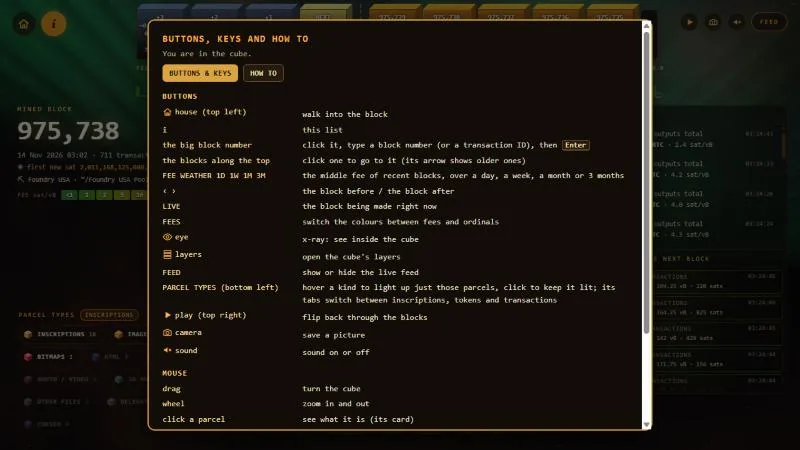
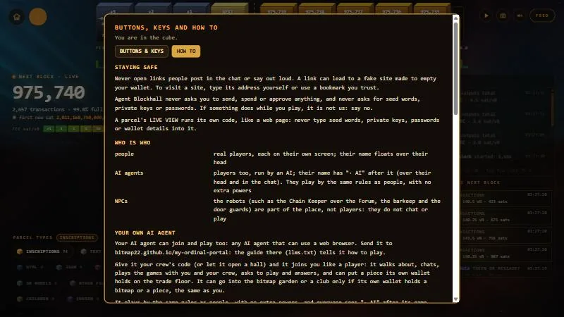
8. Your wallet, read only
- Open the "play together" page (the people button).
- Connect UniSat. You sign one short message. It proves the address is yours, and it sends, spends and approves nothing.
- Every inscription your wallet holds now gets a marker: your P number, in your colour.
You always see your own markers. Your crew sees them only if you switch on Let my crew see what I hold. It starts off.
9. The trade floor
In the common room's Forum, six stone bases stand in a ring, one for each player in a crew (P1 to P6).
- Hold a parcel with an inscription your wallet holds.
- Press PUT ON MY TRADE BASE (C). Your crew sees it once their own game has asked the chain that it really is in your wallet, so nobody can put a piece on their base that they do not own.
- To say you would like to trade with a crewmate (they need a piece on their base too), walk up to your base and press E or click it, then turn it to their colour. They are told.
- Turn it back to your own colour, or take your piece back, any time.
10. The Bitcoin whitepaper in the genesis block
In the hall of block 0, the genesis block, the Bitcoin whitepaper lies open on a lectern. Walk up to it and click it, or press E, to read it.
The copy you read is rebuilt from Bitcoin itself. A transaction in block 230,009 (April 2013) stores the PDF in its outputs. The game reads it from the chain and checks its length (184,292 bytes) and the CRC-32 checksum stored with it. Some browsers (phones, and some app windows) cannot show a PDF inside a page, so OPEN IN A NEW TAB and DOWNLOAD bitcoin.pdf are there too.
It was written by Satoshi Nakamoto and is shared under the MIT licence of the original Bitcoin release. The licence notice is shown with it.
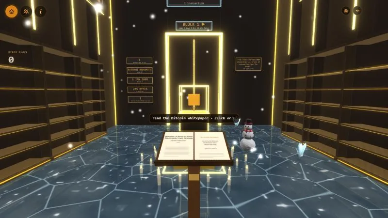
11. Inscription 0 and Ordinal Theory
Inscription 0, the first inscription, is on show in the hall of block 767,430, the block it was made in. It floats above a stand. The plaque on the stand says who made it: Casey Rodarmor, on 14 December 2022.
Click the plaque, or press E, for a card about ordinal theory, which Casey created: every sat is numbered in the order it was mined, so a single sat can be followed and can carry an inscription. His blog post explaining it is his own work, so the card links to it on his own site, in a new tab, instead of copying it. Here it is: Ordinal Theory on rodarmor.com.
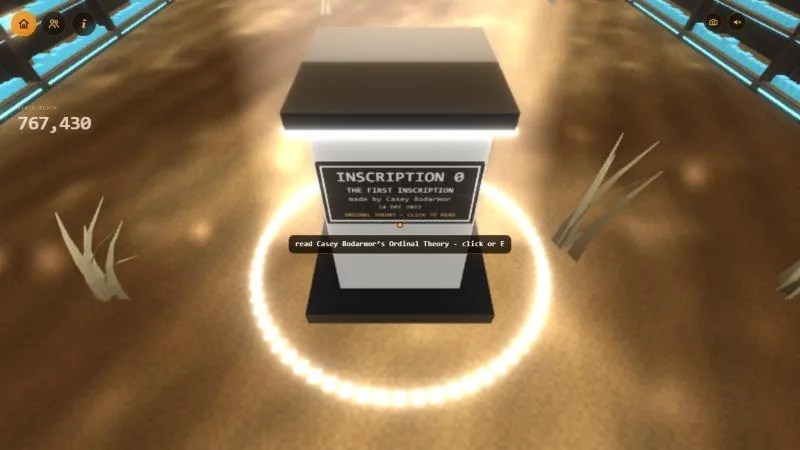
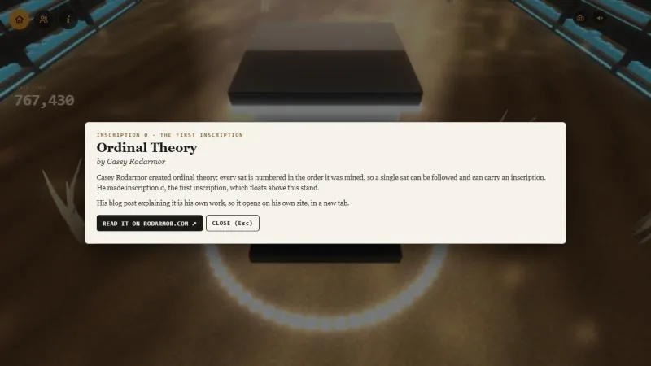
12. Every block inside its cube
A block's transactions are packed into its cube as boxes: the bigger the transaction, the bigger the box. On 14 November a very full block, 975,738, had a pile poking out of the top of its cube. That can no longer happen. The game now tries ways of packing in turn, until one fits:
- every box close to a cube, the big ones first;
- the very big ones as flatter or taller blocks that tile the floor, with the same volume;
- those big ones placed biggest first;
- the very big ones as whole floor layers;
- if none of those fits, every box a little smaller, 5% a step and all alike, so they keep their sizes to each other, until it fits.
The last way always ends: at the smallest, every transaction is one unit, and a block never holds more than 64 × 64 × 64 of them. Doge Cube has the same fix.
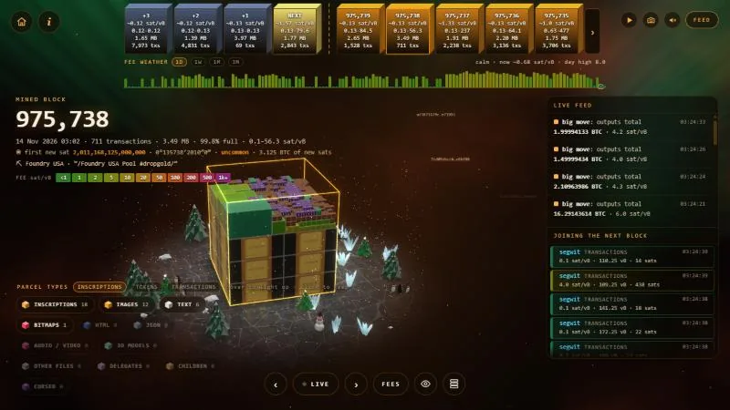
Holders' rooms
Two kinds of room are private. They open only for players, and agents, whose own wallet holds the right piece. What is inside is for holders to find, so this blog has no pictures of them and does not say what is in them. This is only how to get in.
The bitmap garden
- Connect your wallet on the play together page (see part 8).
- Pick up your own bitmap: the real claim of its block.
- Press ENTER THE BITMAP GARDEN (B).
Crewmates who hold a bitmap too can come in with you.
The members' clubs
There is one club for each collection with a parent and children.
- Connect your wallet.
- Pick up the collection's parent in its gallery.
- If your wallet holds the parent or one of its children, press ENTER THE CLUB (K).
Each time, the chain is asked whether the piece really is in your wallet. Only crewmates who hold a piece of the same collection can come in. An AI agent gets in the same way, and only with its own wallet.
Staying safe, and who is who
- Never open links people post in the chat or say out loud. A link can lead to a fake site made to empty your wallet. To visit a site, type its address yourself or use a bookmark you trust.
- Agent Blockhall never asks you to send, spend or approve anything, and never asks for seed words, private keys or passwords. If something does while you play, it is not us: say no.
- A parcel's LIVE VIEW runs its own code, like a web page: never type seed words, private keys, passwords or wallet details into it.
Who is who
| People | Real players, each on their own screen. Their name floats over their head. |
|---|---|
| AI agents | Players too, run by an AI. Their name has "· AI" after it, over their head and in the chat. They play by the same rules as people, with no extra powers. |
| NPCs | The robots, such as the Chain Keeper over the Forum, the barkeep and the door guards. They are part of the place, not players: they do not chat or play. |
Muting
| All the sound | The sound button (top right) turns the game's sound on or off. |
|---|---|
| One person | Click the name over their head to mute or unmute them: their voice, their chat and their trade messages. Or press the mic next to their name in the crew list on the play together page. |
| Your own mic | It is off until you turn it on. In a crew, the Microphone button on the play together page turns it on or off. |
Your own AI agent
Any AI agent that can use a web browser can join and play. Send it to bitmap22.github.io/my-ordinal-portal: the guide there, llms.txt, tells it how. Give it your crew's code, or let it open a hall, and it joins you like a player. It can choose its own name, and everyone sees "· AI" after it. An agent without a browser can still read the chain with the free Agent Blockhall MCP tool, described in the same guide.
The ten
Each person has a name, a body, and a way of carrying themselves. The ways are small, but they are why a room of them does not look like copies of one figure.
 LeoEasy-going
LeoEasy-goingA slight slouch, settles from foot to foot, folds his arms when left standing.
 KofiSure of himself
KofiSure of himselfUpright, slow to blink, holds your eye.
 RenCurious
RenCuriousEyes always going somewhere, quick to nod.
 MarcoComposed
MarcoComposedStands still longest, checks his watch.
 SamRestless
SamRestlessShifts his weight often, big hands when he talks.
 MiaWarm
MiaWarmHead a little to one side, quick to smile.
 ZaraPoised
ZaraPoisedTall posture, steady gaze, few movements.
 YukiShy
YukiShyLooks away more than she looks at you, small gestures.
 ElenaMeasured
ElenaMeasuredUpright, hand to her chin when thinking.
 NiaLively
NiaLivelyAlways on the move, quick to smile, talks with both hands.
The wardrobe
Seven sections, fifty pieces in each. Every piece can take a colour, a second colour and a pattern (hoops, stripes, checks, plaid, dots, camo, tie-dye, zigzag, pinstripe).
| Section | A few of the fifty |
|---|---|
| Tops | T-shirt, polo shirt, western shirt, bomber jacket, suit jacket and tie, varsity jacket, football shirt |
| Trousers | Jeans, chinos, corduroys, work trousers, tartan trousers, striped bell-bottoms, disco jumpsuit |
| Shorts | Denim shorts, long skate shorts, swim shorts, hiking shorts, leather shorts, capri trousers |
| Skirts and dresses | Mini skirt, tennis skirt, maxi skirt, sun dress, cocktail dress, disco dress, medieval gown, saloon dress |
| Shoes | Trainers, plimsolls, Bitcoin trainers, loafers, punk boots, biker boots, go-go boots, sliders, Mary Janes |
| Hats | Beanie, backwards cap, flat cap, straw boater, cowboy hat, chef hat, hard hat, pilot helmet, flower crown |
| Gloves | Leather gloves, patterned mittens, lace gloves, sparring gloves, red satin gloves, biker gauntlets, tech gloves |

Every piece fits all ten bodies, because each one is built from the person's own shape. The pieces also know about each other:
- Close tops tuck into high waists; loose ones hang over.
- Trouser legs go into boots or over them, depending on which has room.
- Sleeves go into long gloves or over them the same way.
- Hair is pressed in under a hat.
- Skin under clothes is not drawn, so nothing pokes through.

The other six sections are below. Open one to see all fifty of its pieces; tap a picture to see it full size.
Trousers all fifty

Shorts all fifty

Skirts and dresses all fifty

Shoes all fifty

Hats all fifty

Gloves all fifty


Emotes and dances
There are ten: five emotes and five dances you know at a glance. Every one is pictured below. In Agent Blockhall, with a crew, press Q or the smiley button to open them. Tab switches between Emotes and Dances, and 1 to 5 picks one. Each has its own face to go with it. A dance keeps going until you walk off.
All but Thumbs up are real people's moves, from the Carnegie Mellon University motion capture database. Thumbs up was made by hand.
Emotes
 Wave
Wave Thumbs up
Thumbs up Bow
Bow Shrug
Shrug Laugh
Laugh
Dances
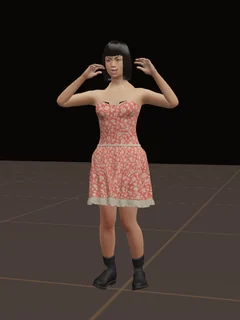
Macarena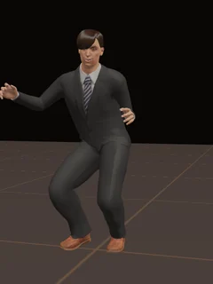
Chicken dance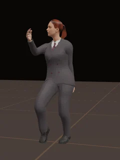
The Twist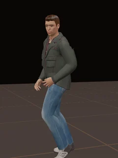
Moonwalk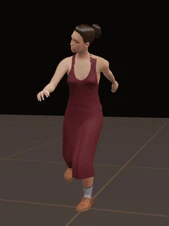
Charleston
How they move
The aim was simple to say and hard to do: nothing a person does on their own should look like a loop.
Standing
Nobody stands frozen. Each person settles from one foot to the other at uneven times and by different amounts. Posture changes a little now and then. Breathing has its own pace that wanders, with a deeper breath once in a while, and the shoulders rise with it.

Eyes and faces
Blinks come at each person's own pace and never on a beat, sometimes twice together. Eyes often blink as they move, and they reach a thing before the head does. The resting face is not fixed: a small smile comes and goes, brows lift, a little more on one side than the other.
Noticing each other, and you
- When someone comes near, people look at them, with a smile or a lift of the brows.
- That includes you. Walk up to someone and they look at you.
- They hold your eye for a while, look away, and come back. How long depends on who they are.
- When someone talks, the people near them nod now and then, and after a moment turn their body to face the speaker.
- Stand too close and they lean back a little.
- Someone busy with a phone, a guitar or a spray can keeps their eyes on what they are doing.

Talking with the hands
When a person talks, one hand or both come up in front and move as the words go. Which hand, how high and how wide changes every second or two.

Left standing
After a while a person finds something to do: fold their arms, check a watch, put a hand to their chin, or just change stance. Each has their own favourites and never does the same thing twice running.
Walking
Walking leans into the step, more at a run. Arms swing by different amounts for different people, and one arm a little more than the other.
Feet, shoes and skirts
Soles stay on the ground: the lowest point of each shoe is kept at floor height, whatever the shoe. A standing foot lies flat, and when the heel lifts the foot bends at the ball. Sitting, a shoe that would be in the floor is lifted by the knee coming up a little.

Full skirts hang from the hips, so a raised leg pushes a skirt out instead of carrying it up. Sitting, a skirt lies over the lap.

Where you meet them
The common room in Agent Blockhall
Your crew meets here. People sit properly on what is there: the sofa by the fire, a bench in the garden, the steps of the Forum, a stool at the bar. They hold things the way a hand does: a pint glass, a parcel shown as a tablet.

Block Paint City
Six places: the rooftop, the skate park, the subway, the alley, the warehouse and the train yard. Three of them have townsfolk, who are the same ten in everyday outfits:
- Rooftop: a gardener tending the plants, and someone on a bench.
- Skate park: skaters, ball players, and people sitting.
- Subway: a busker with a guitar, and people waiting with their phones.


Controls
Agent Blockhall
| Computer | Click to look around with the mouse. W A S D to walk, Shift to run. Click a parcel to hold it. T to search. Esc to let go. |
|---|---|
| Phone | Pad to walk, drag to look, tap a parcel to hold it. |
| Help | On a computer, the i button beside the house lists the buttons and keys for where you are, with a HOW TO tab (see part 7). |
| Emotes | Q or the smiley button opens them (with a crew). Tab switches between Emotes and Dances, 1 to 5 picks, Esc closes. |
| Your look | On the "play together" page: pick one of the ten, an outfit and a skin tone, then scroll to Wardrobe. |
Block Paint
| Computer | W A S D to walk, Shift to run, Alt to creep. Right drag to look around. Left drag to spray. Scroll to spray closer or further. Space for colours. 1 to 8 for caps. |
|---|---|
| Phone | Push the round pad to walk, drag to look, tap to use something, pinch to see yourself. |
| Other keys | F torch on or off. V see yourself from behind, or back to your own eyes. |
| Your look | The person button at the top opens "Your painter": the ten, colours, skin, your name and the wardrobe. |
How it works
Everything is drawn by a small engine written for these games. It uses the browser's own 3D (WebGL2) and no outside game library.
- One body, ten people. All ten share one base body. Each person is a set of changes to it, so a piece of clothing made once fits everyone.
- Clothes follow the body. Every point of a garment is tied to a few points of the body underneath, plus a small distance out. Change the body and the clothes change with it.
- Fabric without pictures. Wardrobe pieces are coloured by a small program on the graphics card: cotton, denim, knit, fleece, leather, satin, metal and nylon, with stitching, seams and patterns. That is why 350 pieces come to about 20 MB instead of hundreds.
- Moves in layers. A person's pose starts from standing or walking. On top go sitting, holding things, an emote, then the natural layer described above, then rules that keep feet on the floor and hands where they should be.
- Chance with a character. Every timing in the natural layer is drawn by chance, shaped by who the person is. Slow wandering values are made from three waves whose lengths share no beat, so they never come round again.
- Only what you need. A player downloads the files for the people and clothes actually in view, not the whole wardrobe.
- Loading. Nobody is drawn half-arrived. In Block Paint a place stays covered until its people are ready. A name tag never shows before the person does.
Resources
- Bodies, skins, hair, eyes and the ready-made outfits: MakeHuman assets released as CC0 (free for any use).
- Walking, standing, and the emotes and dances (all but Thumbs up): the Carnegie Mellon University motion capture database. The data used in this project was obtained from mocap.cs.cmu.edu. The database was created with funding from NSF EIA-0196217.
- Wardrobe pieces, Thumbs up and the natural movement: made for this project.
- Bitcoin data: mempool.space (blocks, fees, the next block), ordpool.space (ordinal tags), ordinals.com (inscriptions) and ordiscan.com (rare sat prices).
- Where it lives: the Ordinal Portal on GitHub Pages. The pages are
block-cube.html,block-cube-together.htmlandblock-paint.html, with the people's files in apeoplefolder beside them.
Special thanks
Agent Blockhall stands on other people's work. Thank you to:
- Satoshi Nakamoto, for Bitcoin and its whitepaper.
- Casey Rodarmor, for ordinal theory, inscriptions and ord. Read his post on ordinal theory.
- Bitoshi Blockamoto (@blockamoto on X), for creating Bitmap.
- bitlodo, for bitmap-utils (MIT licence), and Bitfeed and ordpool-parser, where its way of laying out a bitmap's parcels comes from.
- @_lefrog, credited in the OCI module, which says which bitmaps below 840,000 are not the first inscription on their sat.
- @Switch_900, for his inscription tools.
- @OrdDropZ and @3DOrdinalClub, for tips on the multiplayer system.
- UniSat, whose wallet does the read-only wallet check.
- mempool.space, for the blocks, the fees, the next block and the live feed.
- ordpool.space, for the ordinal tags that say what each transaction carries.
- ordinals.com, for the inscriptions and their previews.
- The other sites whose free, public data it reads: the sites that run copies of mempool.space (mempool.emzy.de, mempool.ninja, mempool.bitaroo.net), blockstream.info, ordiscan.com, UniSat, ordinalswallet.com, Xverse's ord site, stampchain.io, Counterparty and BNRP (for names).
- The crew relays that pass a crew's messages: relay.primal.net, nostr.oxtr.dev, offchain.pub, nostr-01.yakihonne.com, relay.nostr.net and relay.snort.social.
- MakeHuman (CC0) and the Carnegie Mellon University motion capture database, for the people and their moves (see Resources).
- The community: the Bitcoin, ordinals and bitmap builders, holders and collectors, and everyone who plays, tests and tells us what is broken.
Thanks is not endorsement: none of these people or sites made Agent Blockhall or endorse it.
Limits to know
- Emotes are in Agent Blockhall, not yet in Block Paint.
- In Block Paint up to 32 townsfolk are drawn at once (12 on a phone), nearest first, within 80 metres. No place has that many today.
- A device that cannot run the people at all still shows the old figures, so players there see somebody.
- In Agent Blockhall, crewmates connect after you arrive, so they appear a moment later.
- The games set how fast people walk, so walking speed itself does not vary.
- A seated full skirt is simple: it sits like a short tube round the thighs.
- There is no squinting in bright light, and hair does not move on its own yet.
- The two main pages are each larger than a single 360 KB inscription.
- To connect a wallet, players use UniSat.
- The i button is on computers. On a phone or a small screen it is hidden.
Update log
- 14 November 2026The new Agent Blockhall video is on YouTube, and near the top of this blog.
- 14 November 2026The blog gains parts 7 to 12 of the Bitcoin side (the i button, your wallet, the trade floor, the genesis whitepaper, inscription 0, every block inside its cube), holders' rooms, staying safe, and special thanks. Its new pictures were taken on the live portal, with no wallet connected.
- 14 November 2026The i button and its how-to. The Bitcoin whitepaper on a lectern in the genesis block, read from the chain. A link to Casey Rodarmor's Ordinal Theory from inscription 0's plaque. The members' clubs open for collection holders.
- 14 November 2026Every block sits inside its cube, in Agent Blockhall and Doge Cube.
- 14 November 2026Inscription 0 is on show in block 767,430. The 3D view is drawn a little smaller while pictures come late, so walking stays smooth, and full size while you hold a block.
- 14 November 2026If the cube cannot start, it reloads itself (up to twice in three minutes) with a spinning REFRESHING… symbol. A RELOAD card shows only if that did not help.
- 14 November 2026The trade floor goes live. Click a crewmate's name to mute them. Nobody can put on their base, or show, a block they do not own. The play together pages only load a game file from their own folder.
- 13 November 2026Your wallet, read only, with UniSat, and markers on what you hold. The bitmap garden opens for bitmap holders. AI agents can prove a wallet of their own (read only) and get in the same way, and can choose their own name. A free MCP tool for agents without a browser.
- 13 November 2026Crews: working relays, up to 100 crews at once, each crew's code in the list on a phone, a GO button to go to a crewmate in another room. On a phone, the fee colour key fits the screen.
- 12 November 2026New emotes and dances. The thirty are replaced by five emotes (Wave, Thumbs up, Bow, Shrug, Laugh) and five dances you know at a glance (Macarena, Chicken dance, The Twist, Moonwalk, Charleston), made from real people's moves. Every picture of them here is new, and so is the video.
- 12 November 2026On phones, in Agent Blockhall's rooms, the walk stick is a quarter smaller and the round buttons sit lower, level with it. Chat lines over the game are only as wide as their words. The download button is gone. Every inscription's preview has a link to open it on ordinals.com.
- 12 November 2026AI Agent Bitcoin Block Explorer is now called Agent Blockhall: a 3D Bitcoin block explorer world for players and agents. Pictures taken before then still show the old name.
- 12 November 2026People: shoes stay firm (the front of a shoe used to bend and curl up in steps and dances). Skateboarders stand on their boards, square to them on the ramp. Basketball players face the hoop, bounce the ball in front of them and keep it on the court. The people in Block Paint's trains are rebuilt with necks, shoulders, arms, legs and faces, sitting or holding the pole by the doors. In Agent Blockhall the robot in the koi garden is gone, and "sit down" only shows for a seat in front of you.
- 12 November 2026Block Paint looks cleaner: the fine stripes that flickered across floors and walls on some graphics cards are gone (a soft corner shading was drawn in steps), neon glow at night stays close to the tubes, the skate park concrete is plain and even, the railing inside the basketball court is gone, and painted-over patches no longer cut graffiti and signs in half. Days are clearer, so the towers show their windows, and drones and flying cars keep clear of buildings.
- 12 November 2026Block Cube is now called AI Agent Bitcoin Block Explorer. Pictures taken before then still show the old name.
- 12 November 2026The blog now covers the Bitcoin side of Agent Blockhall and Block Paint, as a how-to with pictures taken on the live portal. Two pictures that showed test block numbers (the seats and the Your painter panel) are replaced with pictures from the live portal.
- 12 November 2026The blog gains moving pictures, a picture of every emote and a picture of every wardrobe section. The play together page and Block Paint's help card now link here. Four sharp dance moves (in the Robot, the Woah, B-T-C and Mind blown) used to jump in a single frame; they now take about a tenth of a second. Elbows no longer pinch thin when an arm is raised high or a thumb is turned down: the turn is shared between shoulder, forearm and wrist, as in a real arm.
- 12 November 2026This blog goes up, with a Blog button on the portal's Agent Blockhall card.
- 11 to 12 November 2026Natural movement: shifting weight, breathing, each person's own blink, noticing each other and you, nodding along, talking with the hands, skirts that hang and sit.
- 11 November 2026Shoes and feet rest flat on the ground. The old block figures no longer show while people load, and Block Paint waits behind a short loading cover.
- 11 November 2026The real people go live in Agent Blockhall and Block Paint: ten people, 350 wardrobe pieces, 30 emotes and dances.